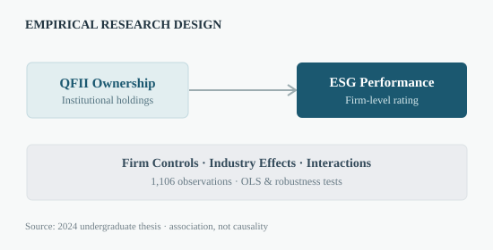

Institutional Ownership & ESG Performance
Cross-industry empirical research into foreign capital and corporate ESG performance.
Are higher QFII shareholding ratios associated with stronger ESG scores, and does the relationship vary by industry?
Examined the association between Qualified Foreign Institutional Investor (QFII) holdings and ESG outcomes for Chinese A-share firms, with industry effects and robustness checks.

How the analysis was conducted
Analyzed quarterly observations of A-share companies with QFII ownership from 2018 Q4 to 2023 Q1. Estimated OLS regressions with firm characteristics, industry indicators and ownership-by-industry interaction terms, alongside robustness specifications.
What the evidence suggests
- Positive and statistically significant association between QFII shareholding and ESG ratings in the reported regression specifications.
- The reported specification with controls and industry interactions had adjusted R² of 0.337.
- Heterogeneous industry interactions suggest the association is not uniform across sectors.
Based on Litao Tan, “Exploring the Impact of Qualified Foreign Institutional Investors (QFII) on Corporate ESG Performance: A Cross-Industry Analysis” (undergraduate thesis, 2024).
The original file, raw datasets and third-party institutional materials are not hosted here pending a separate publication-rights and privacy review.